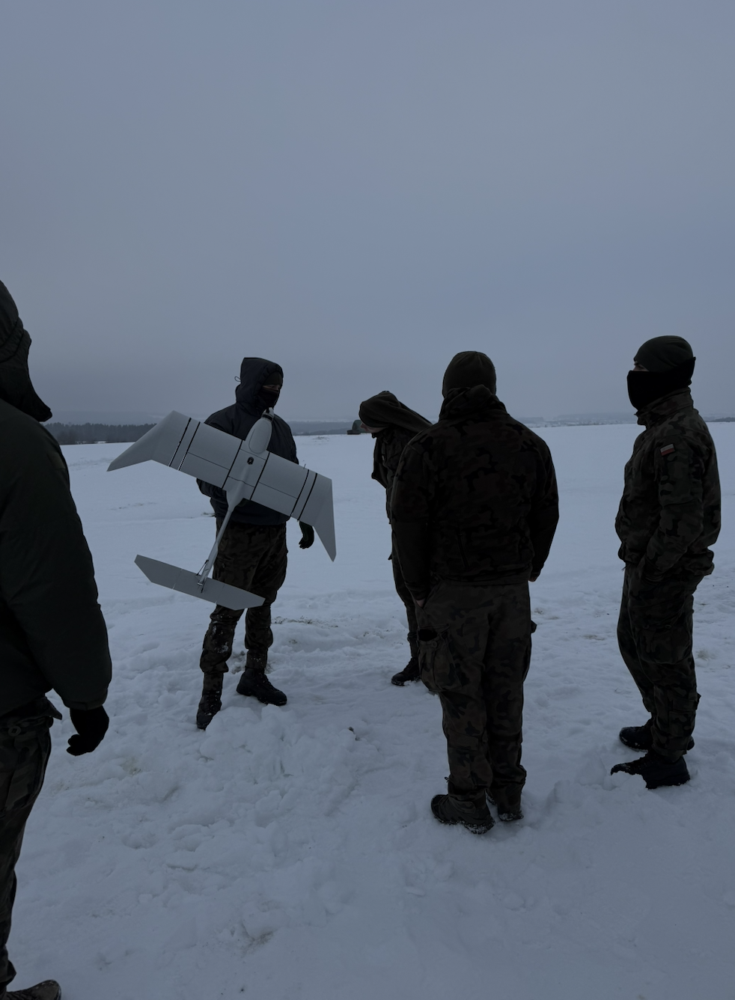

F / 01 · Odporność
Powrót do powietrza po twardym lądowaniu.
Połączenie materiałów o wysokiej odporności na pękanie i rozrywanie oraz nowatorskich rozwiązań konstrukcyjnych (w trakcie procesu patentowego) pozwoliło stworzyć drona zdolnego do ponownego lotu po zderzeniu z ziemią z prędkością 60 km/h.